Sua empresa cresceu. Ela está estruturada para continuar crescendo?
A EXPLORE ajuda PMEs de todo o Brasil a organizar rotina, processos, métricas e gente, sem perder a agilidade que fez a empresa crescer até aqui.
O que trava o crescimento da sua empresa hoje?
Quando a empresa cresce, os pontos de trava mudam de lugar. Reconhece algum desses sinais?
Reunião acontece, mas nada muda depois
O time se encontra toda semana, mas as mesmas decisões voltam à pauta no mês seguinte.
Um processo inteiro depende de uma pessoa só
Se essa pessoa falta ou sai, ninguém mais sabe exatamente como aquilo funciona.
Você só descobre o problema no extrato do banco
Os números existem, mas chegam tarde demais para mudar o resultado do mês.
Toda decisão importante ainda passa por você
O time cresceu, mas a responsabilidade de decidir continua concentrada numa pessoa só.
Uma frente para cada momento da sua empresa

Para quem ainda não sabe onde exatamente está travando
Mapeamos rotina, processos, métricas e clima do time para mostrar exatamente onde a empresa está travando o próprio crescimento.
Para quem ainda depende de cobrar o time todo dia
Desenhamos reuniões, rotinas e processos que o time consegue seguir sozinho, sem depender de cobrança constante do dono.
Para quem decide no escuro, sem número na mesa
Colocamos os números certos na mesa para que decisão deixe de ser sobre feeling e passe a ser sobre dado.
Para quem lidera sozinho demais
Preparamos gestores e equipes para o próximo tamanho da empresa, com treinamentos que o time aplica no dia seguinte.
Da consultoria à execução, em cada frente que sua empresa precisa
Diagnóstico pronto em 2 semanas. Estrutura completa rodando em até 90 dias. Quatro frentes, uma metodologia só.
Jornada Oriente
Nosso método completo de estruturação organizacional, em três etapas conectadas, do diagnóstico até o plano rodando de verdade no dia a dia do time.
Diagnóstico
Formulário estruturado com sócios e equipe-chave, seguido de entrevistas presenciais. Mapeamos cinco pilares: estratégia, pessoas, operações, financeiro e governança.
Mapa de Orientação
O diagnóstico vira plano de ação priorizado em ciclos de 30, 60 e 90 dias: primeiro o mapa de decisão (quem decide o quê), depois estrutura formal, por último cultura documentada.
Trilha de Desenvolvimento
Rituais de gestão semanais, supervisão de processos e indicadores de performance acompanhados de perto, até o plano virar rotina do time e a empresa ganhar autonomia pra tocar sozinha.
- Diagnóstico documentado dos 5 pilares
- Mapa de riscos organizacionais
- Mapa de decisão por função
- Estrutura organizacional formal
- Dashboard de indicadores
- Manual de cultura
Tudo documentado, e cada entregável é propriedade da empresa.
Recrutamento e seleção
Estruturamos o processo seletivo do perfil da vaga ao onboarding, para contratar com critério e reduzir turnover.
- Mapeamento do perfil técnico e comportamental da vaga
- Triagem e entrevistas estruturadas
- Avaliação comportamental do candidato final
- Onboarding acompanhado nos primeiros 90 dias
Saiba mais
Contratar errado custa caro: tempo de onboarding perdido, reposição, impacto no time que já está sobrecarregado. Por isso o processo começa antes da vaga aberta, mapeando com o gestor o que a função exige na prática: técnico e comportamental, além do que aparece no currículo.
Cada etapa é estruturada com roteiro de entrevista padronizado, pra não depender do faro de quem entrevista naquele dia. O candidato final passa por avaliação comportamental antes da proposta, e o acompanhamento segue até os primeiros 90 dias, pra garantir que a contratação performa na prática.
Treinamentos de lideranças e equipe
Programas vivenciais de liderança, comunicação e gestão de pessoas, construídos a partir da avaliação comportamental real da equipe.
- Avaliação comportamental de cada participante
- Devolutiva coletiva de perfis da equipe
- Experienciais sistêmicas: dinâmicas práticas com debriefing conectado ao trabalho
- Formato presencial ou híbrido, sob medida pro porte do time
Saiba mais
A maior parte dos treinamentos de liderança do mercado é genérica: a mesma apresentação serve pra qualquer empresa. O nosso parte de um diagnóstico comportamental real da equipe antes de montar qualquer conteúdo, usando instrumentos de avaliação comportamental aplicados em formato coletivo, pra entender os perfis do time antes de desenhar qualquer dinâmica.
A partir disso, desenhamos dinâmicas vivenciais com debriefing conectado ao trabalho real e devolutiva coletiva de perfis. Cada participante sai sabendo seu próprio padrão de comportamento sob pressão, decisão e conflito, e a liderança sai com um mapa concreto da equipe.
Gestão de riscos psicossociais
Estruturamos o mapeamento e a gestão de riscos psicossociais com base no PGR, exigidos pela NR-1, com fiscalização já em vigor desde maio de 2026.
- Mapeamento de riscos por função e setor
- Gestão de riscos psicossociais estruturada com base no PGR
- Plano de ação com prazos e responsáveis
- Capacitação de lideranças para identificar sinais de risco
Saiba mais
Desde maio de 2026, a Portaria MTE 1.419/2025 exige que toda empresa com empregados registrados pela CLT, independente do porte, inclua riscos psicossociais no GRO (Gerenciamento de Riscos Ocupacionais). Sobrecarga, assédio moral, conflitos crônicos e jornadas exaustivas deixaram de ser um problema "de RH" e passaram a ser item de fiscalização, documentado no PGR, com plano de ação, prazos e responsáveis definidos.
Conduzimos esse mapeamento com a mesma lógica dos 5 pilares que usamos no diagnóstico da Jornada Oriente, aplicada ao pilar de pessoas: entrevistas, observação de campo e os mesmos instrumentos comportamentais que já usamos em treinamento. O resultado não é só um documento pronto pra auditoria, é um retrato real de onde a operação está sob pressão, antes que vire afastamento ou passivo trabalhista.
Não sabe qual frente faz mais sentido agora? A gente ajuda a descobrir.
Falar com a genteConsultoria feita para o tamanho real da sua empresa
A EXPLORE é uma consultoria de desenvolvimento organizacional focada em PMEs em transição de complexidade: empresas de 10 a 150 colaboradores que já não cabem mais na forma como foram criadas.
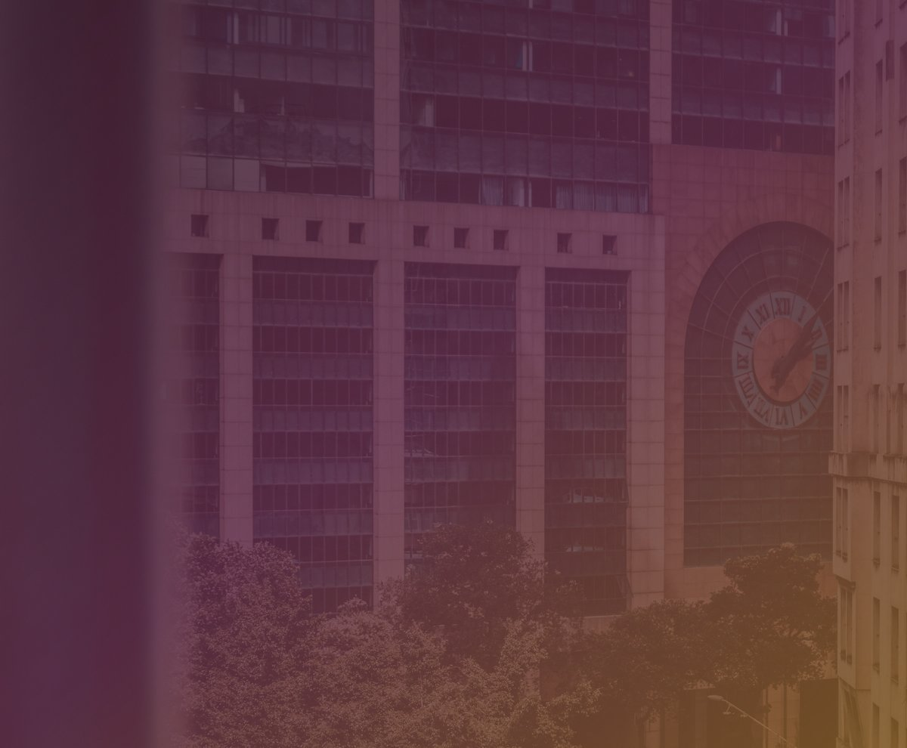
PMEs que já sentem o crescimento pedindo mais estrutura do que a empresa tem hoje.
A transição de complexidade, em uma imagem
O jeito de gerir que funcionava com 10 pessoas não escala sozinho. A distância entre as duas linhas é o que a estrutura organizacional precisa cobrir, e é exatamente onde entra a Jornada Oriente.
Quem já confiou na EXPLORE
Setores distintos, portes diferentes. Um ponto em comum: chegaram num momento em que o instinto não era mais suficiente.
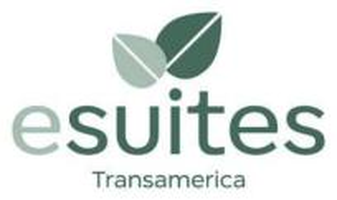
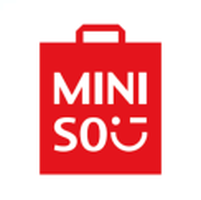
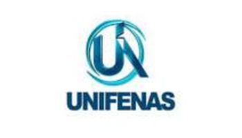
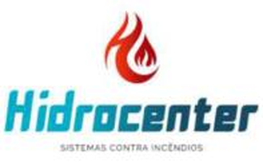
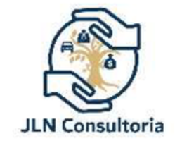
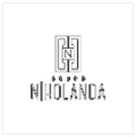
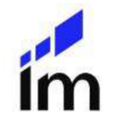
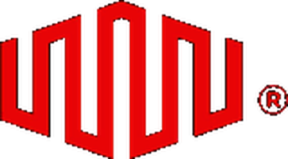
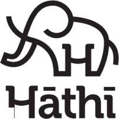
Quem lidera a EXPLORE

Telmo atua há mais de 20 anos em posições executivas e consultivas, apoiando CEOs e conselhos na estruturação de negócios mais eficientes, sustentáveis e preparados para crescer, em setores como real estate, shopping centers, hotelaria, estacionamentos e serviços. Formado em Ciência da Computação, com pós-graduação em Gestão de Projetos, começou a carreira com base técnica forte e construiu, ao longo do tempo, uma atuação que integra visão estratégica, disciplina operacional e desenvolvimento humano. Já liderou projetos de governança corporativa, turnaround operacional, expansão de unidades, estruturação de KPIs e rituais executivos, com resultados concretos em redução de custos, aumento de produtividade e crescimento estruturado. Na EXPLORE, ajuda empresas a enxergar o todo, conectando estratégia, governança, processos e pessoas.

Aexane é jornalista, psicóloga e treinadora comportamental sistêmica. Iniciou a atuação como psicóloga clínica em 2009 e, desde 2012, se dedica a transformação de vida e carreira, ajudando pessoas a desenvolverem comportamentos mais conscientes e alinhados com sua essência. É master trainer coach e já treinou lideranças em diferentes pontos do Brasil, o que a levou a estruturar uma metodologia própria, unindo psicologia, coaching e uma visão sistêmica sobre a relação entre indivíduo e organização. Acredita que líderes com autoestima fortalecida constroem equipes mais saudáveis e resultados mais consistentes. Na EXPLORE, aplica esse olhar ao desenvolvimento de pessoas e lideranças, com foco em autenticidade, consciência e propósito.
Metodologia validada, aplicada do jeito certo para o seu porte
Diagnóstico
Entendemos o ponto real da empresa antes de propor qualquer mudança.
Plano
Priorizamos o que resolve mais rápido e traz mais retorno primeiro.
Implementação
Acompanhamos de perto até o ritual virar hábito do time.
Acompanhamento
Medimos resultado e ajustamos o que for preciso ao longo do caminho.
A EXPLORE em campo, não só no relatório
Diagnóstico e planilha são parte do trabalho. A outra parte acontece em sala, com o time reunido de verdade.
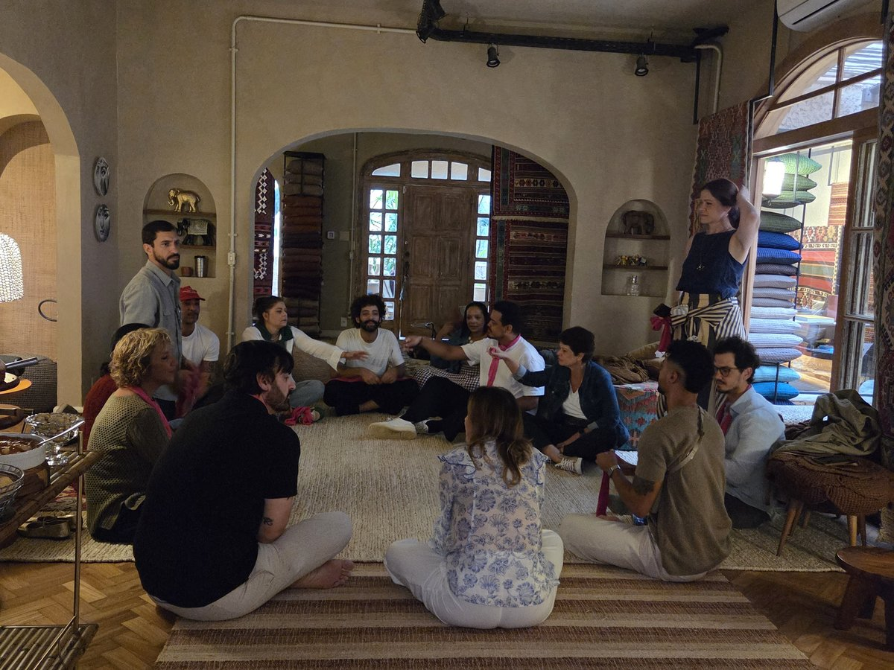
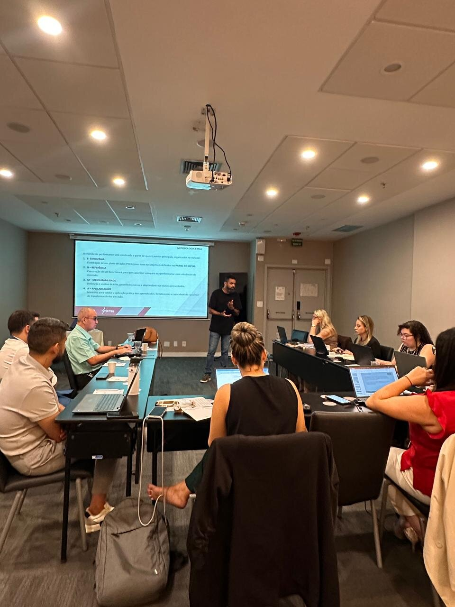
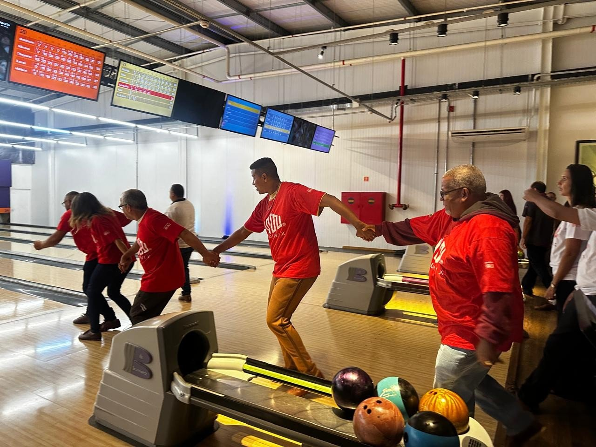
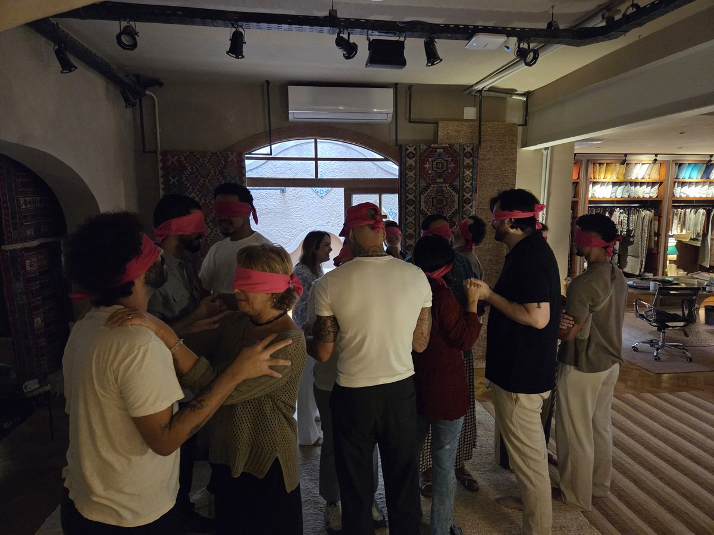
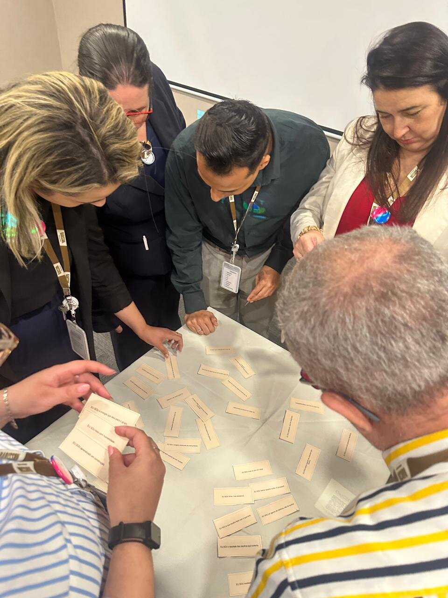
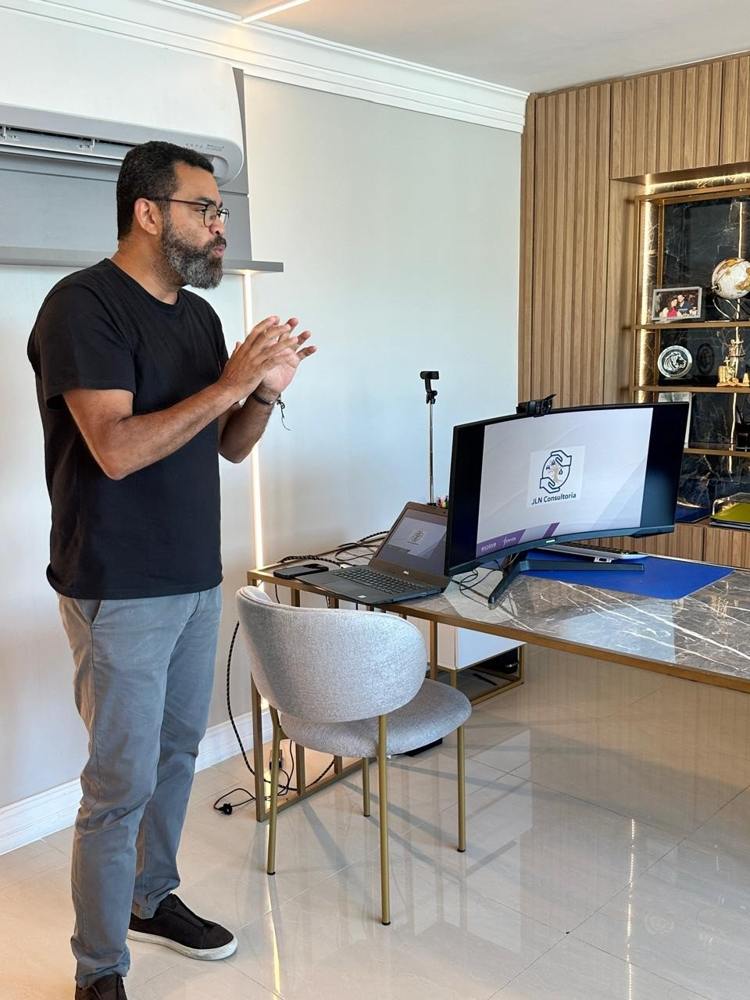
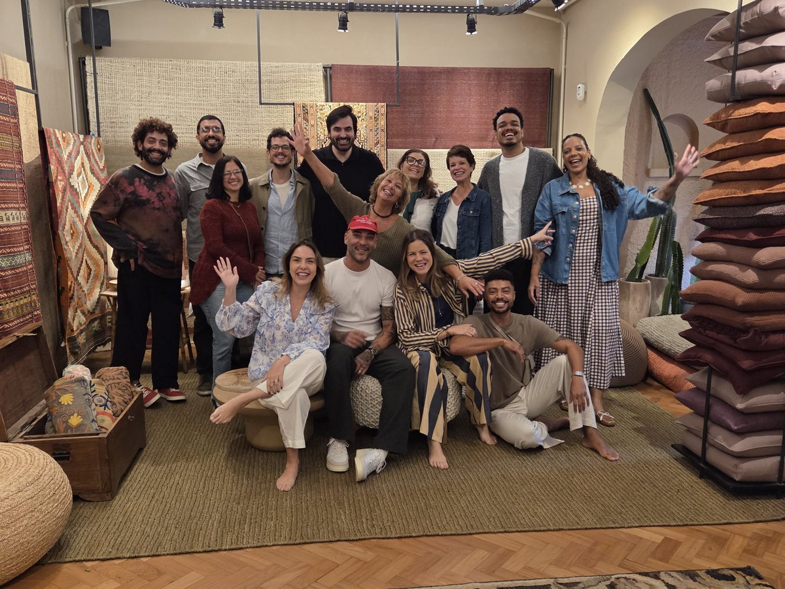
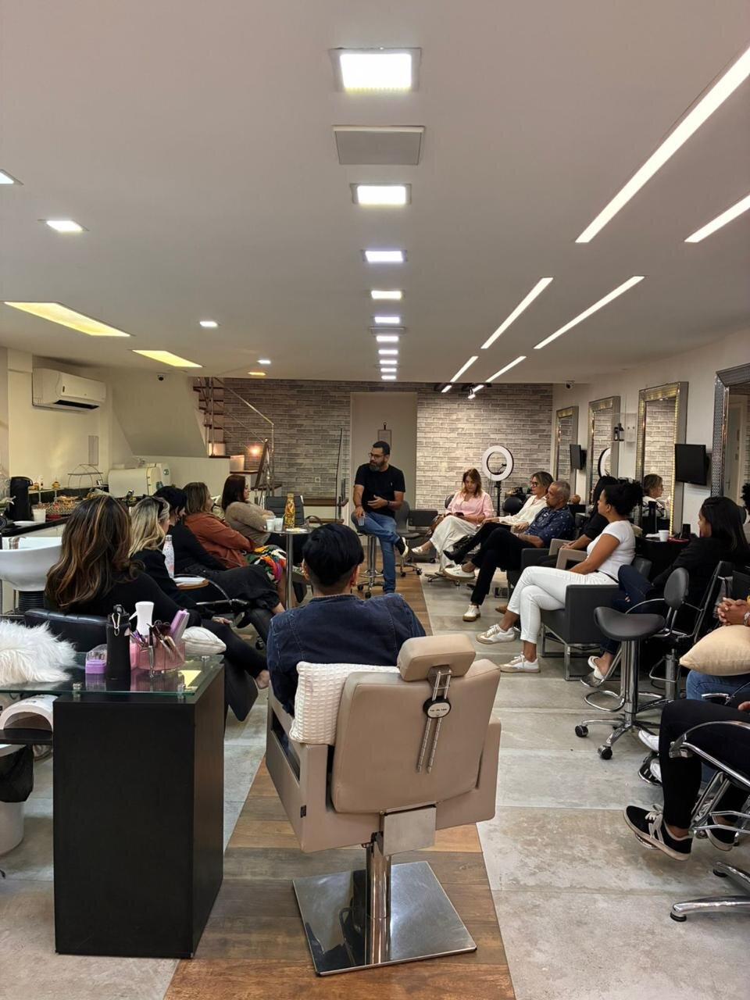
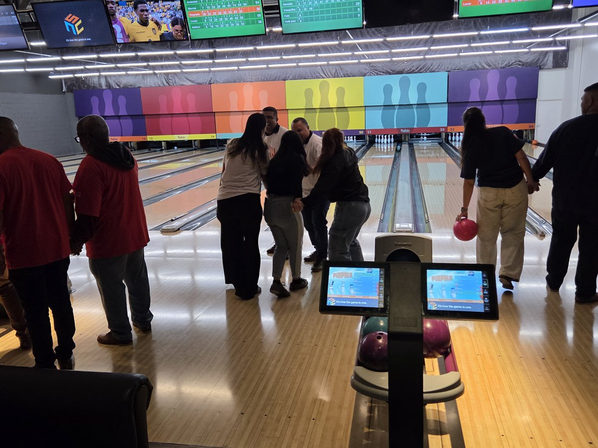
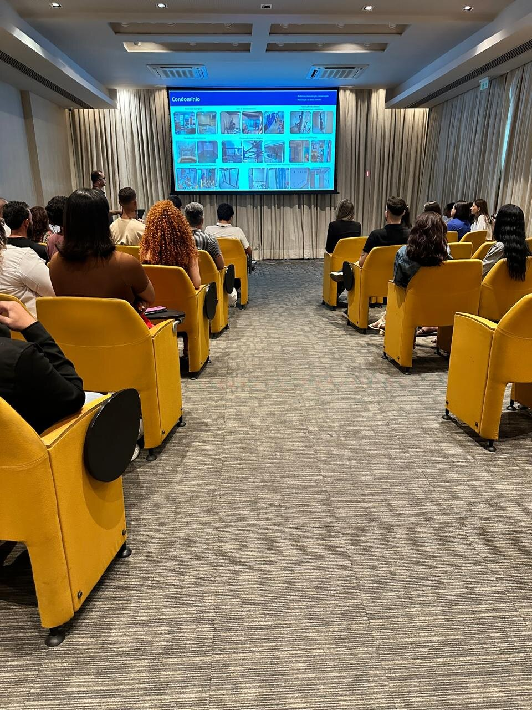
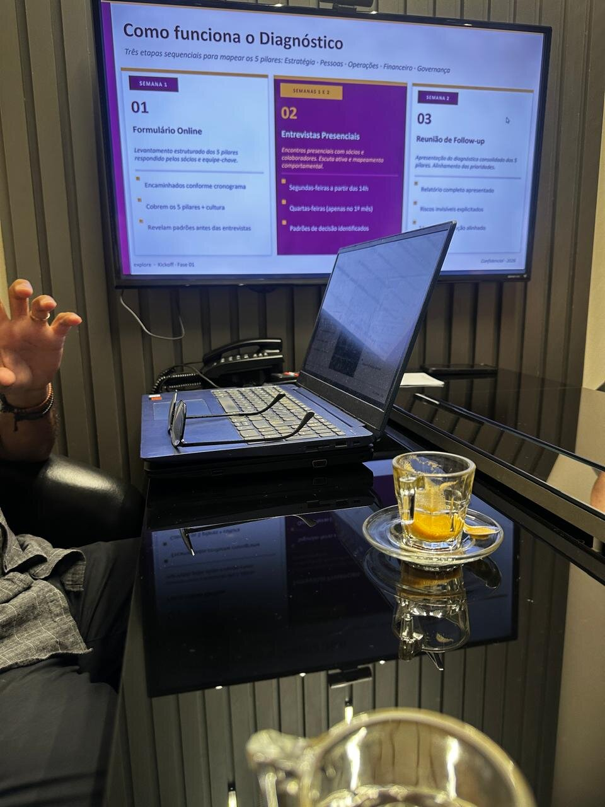
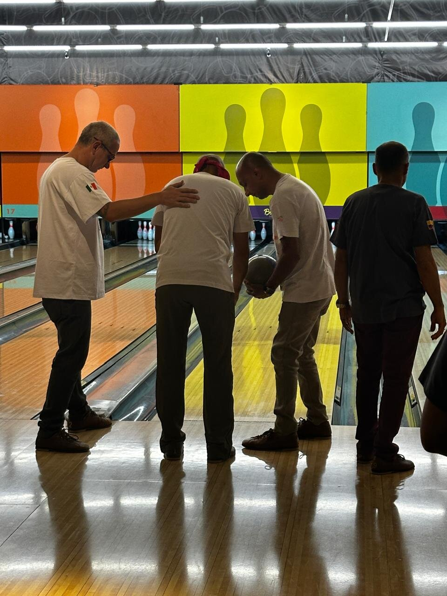
Descubra em 4 perguntas onde sua empresa está travando
Leva menos de 2 minutos. O resultado é imediato e não pede cadastro antes de mostrar nada.
O time segue as rotinas da empresa mesmo sem você cobrar?
Se uma pessoa-chave saísse amanhã, o processo dela continuaria rodando?
Você toma decisões importantes olhando número ou olhando feeling?
Os líderes da empresa sabem dar feedback e resolver conflito sem te acionar?
Calculando o seu índice de maturidade organizacional...
Quero entender esse resultadoAntes de você perguntar
Para que tamanho de empresa a EXPLORE trabalha?
Empresas de 10 a 150 colaboradores, faturando entre R$ 3 milhões e R$ 30 milhões por ano. O sinal não é só o número: é quando toda decisão ainda passa pelo dono ou sócio, processo importante mora só na cabeça de uma pessoa, e o jeito que funcionava com 15 pessoas já não aguenta com 50.
Quanto tempo dura um projeto?
O diagnóstico completo dos 5 pilares (estratégia, pessoas, operações, financeiro e governança) leva cerca de 2 semanas, entre formulário e entrevistas presenciais. A partir daí, o Mapa de Orientação roda em ciclos de 30, 60 e 90 dias: primeiro o mapa de decisão, depois estrutura formal, por último cultura documentada. Treinamentos e workshops avulsos podem ser um único encontro de meio período.
Preciso parar a operação para fazer o diagnóstico?
Não. O diagnóstico roda em paralelo à operação normal, com formulário respondido em minutos pelos sócios e equipe-chave, e entrevistas presenciais agendadas sem interromper o dia a dia. Depois do diagnóstico, o único compromisso fixo é um ritual de gestão semanal, geralmente de 1 hora.
Vocês atendem empresas de todo o Brasil?
Sim. Nossa sede é no Rio de Janeiro, mas atendemos empresas em todo o Brasil, com diagnóstico e acompanhamento remoto e viagens presenciais quando o projeto pede (treinamentos vivenciais, por exemplo, costumam ser presenciais).
Como funciona o primeiro contato?
Você preenche o formulário ou faz o diagnóstico rápido acima. A partir daí, marcamos uma conversa sem custo pra entender seu cenário, os sinais que você já percebe e se faz sentido seguir pra uma proposta. Nada de formulário longo ou reunião de vendas disfarçada de diagnóstico.
Quando faz sentido contratar uma consultoria?
Quando o crescimento começa a expor problema de margem, caixa, execução ou decisão. Sinais comuns: meta que não vira rotina, indicador que chega tarde, reunião sem encaminhamento, decisão concentrada em uma pessoa só, e a sensação de que o próximo salto não vai vir de mais cliente, vai vir de estrutura.
Qual é o investimento necessário?
Varia com o escopo, mas pra dar uma referência real: um diagnóstico completo dos 5 pilares fica na faixa de R$ 10 a 12 mil. Um programa completo de estruturação organizacional (diagnóstico + mapa de orientação em ciclos de 90 dias) costuma ficar entre R$ 60 e 80 mil. Treinamentos vivenciais avulsos partem de R$ 8 a 9 mil por turma. Definimos o valor exato depois do diagnóstico inicial, quando já sabemos o tamanho real do trabalho.
A EXPLORE atende empresas de qualquer setor?
Sim, desde que estejam dentro do perfil de porte e faturamento que atendemos. Hoje atendemos empresas de hotelaria, educação, varejo, indústria, serviços jurídicos, saúde, tecnologia e decoração, entre outros. A metodologia dos 5 pilares funciona porque olha pra estrutura da empresa, não pro produto que ela vende.
Textos, publicações e ideias sobre gestão de PMEs
Reflexões práticas sobre rotina, processos, métricas e liderança, escritas para quem toca a empresa no dia a dia.

O tamanho que quebra a empresa que deu certo
Por que o mesmo jeito de gerir que fez sua empresa crescer até aqui pode ser exatamente o que está travando o próximo salto.
Ler artigo
Reunião não é rotina de gestão
A diferença entre marcar reuniões e ter um ritual de gestão que o time segue sozinho, mesmo quando o dono não está olhando.
Ler artigo
Sua empresa está jogando para vencer ou para continuar jogando?
Como a lógica do jogo infinito de Simon Sinek muda a forma de tomar decisão em uma PME em crescimento.
Ler artigoConte um pouco sobre sua empresa
Preencha o formulário abaixo. Respondemos em até 1 dia útil.
Prefere outro canal?
WhatsApp: +55 21 97259-3975
Rio de Janeiro, RJ
Atendimento em todo o Brasil, de forma remota e presencial, de segunda a sexta, das 9h às 18h.
Política de privacidade (texto-base)
A EXPLORE coleta os dados enviados neste formulário (nome, empresa, e-mail, telefone e mensagem) exclusivamente para fins de contato comercial. Não compartilhamos esses dados com terceiros para fins de marketing.
Você pode solicitar a exclusão dos seus dados a qualquer momento entrando em contato pelos canais informados nesta página.
Este texto é uma base honesta de transparência e não substitui uma revisão jurídica formal antes da publicação.